Generato in data: 2026-06-30 17:32:52.477449 | Filtro CWI ≥ 0.75 | Soglia Presenza Metrica ≥ 10%
| Variabili Selezionate | |
|---|---|
| Interazioni Attive | |
| Modello Intercetta | no |
| Formula di Riferimento | VAR ~ 1 |
| Incertezza Totale CV (σ) | 0.006 |
| Approvazione Modello Globale | NO (CWI Globale: 0.497) |
| Ammissibilit` Floor (0.05) | NO (CWI Quantile: 0.497) |
| Ammissibilit` Mediana (0.50) | NO (CWI Quantile: 0.497) |
| Ammissibilit` Ceiling (0.95) | NO (CWI Quantile: 0.497) |
Grafici non generati: il modello globale o i singoli quantili non hanno raggiunto la stabilit` critica di CWI ≥ 0.90.
| Variabili Selezionate | |
|---|---|
| Interazioni Attive | |
| Modello Intercetta | no |
| Formula di Riferimento | VAR ~ 1 |
| Incertezza Totale CV (σ) | 0.0083 |
| Approvazione Modello Globale | NO (CWI Globale: 0.4959) |
| Ammissibilit` Floor (0.05) | NO (CWI Quantile: 0.4959) |
| Ammissibilit` Mediana (0.50) | NO (CWI Quantile: 0.4959) |
| Ammissibilit` Ceiling (0.95) | NO (CWI Quantile: 0.4959) |
Grafici non generati: il modello globale o i singoli quantili non hanno raggiunto la stabilit` critica di CWI ≥ 0.90.
| Variabili Selezionate | poly(VEL,2) log10(DEPTH) |
|---|---|
| Interazioni Attive | |
| Modello Intercetta | full |
| Formula di Riferimento | VAR ~ 1 + poly(VEL, 2) + log10(DEPTH) + GROUP + SUB |
| Incertezza Totale CV (σ) | 0.0404 |
| Approvazione Modello Globale | YES (CWI Globale: 0.8597) |
| Ammissibilit` Floor (0.05) | NO (CWI Quantile: 0.295) |
| Ammissibilit` Mediana (0.50) | YES (CWI Quantile: 0.9596) |
| Ammissibilit` Ceiling (0.95) | YES (CWI Quantile: 0.8115) |
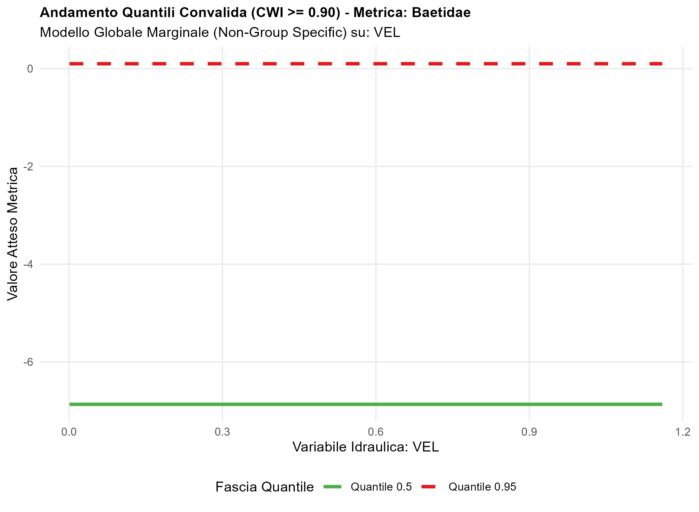
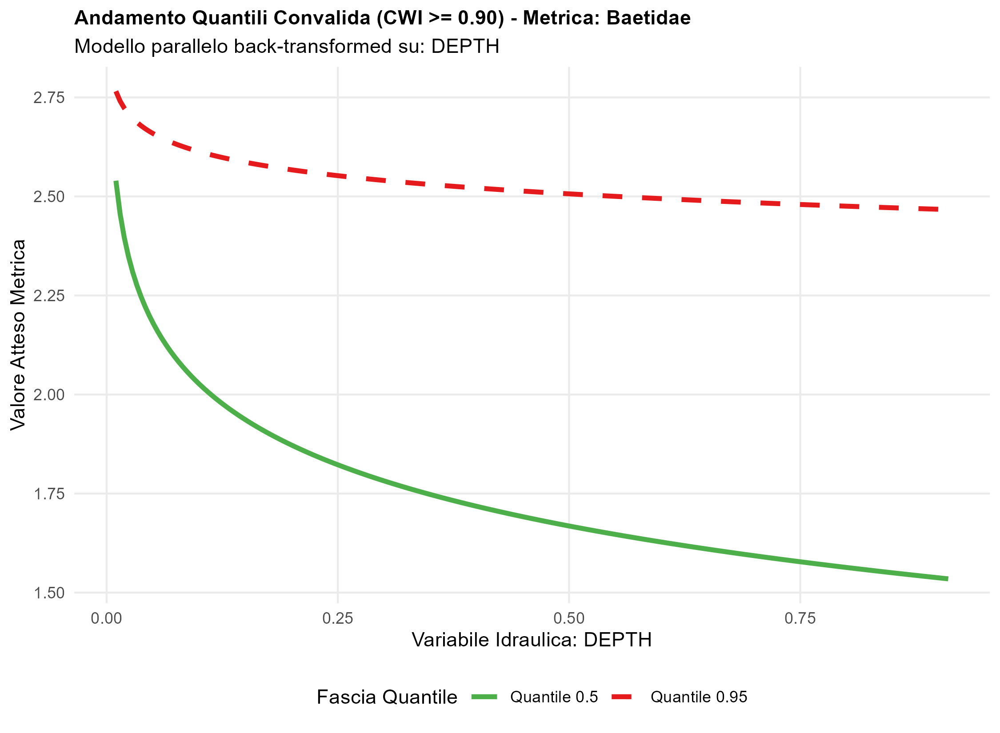
| Variabili Selezionate | |
|---|---|
| Interazioni Attive | |
| Modello Intercetta | no_sub |
| Formula di Riferimento | VAR ~ 1 + GROUP |
| Incertezza Totale CV (σ) | 0.0126 |
| Approvazione Modello Globale | NO (CWI Globale: 0.4937) |
| Ammissibilit` Floor (0.05) | NO (CWI Quantile: 0.4937) |
| Ammissibilit` Mediana (0.50) | NO (CWI Quantile: 0.4937) |
| Ammissibilit` Ceiling (0.95) | NO (CWI Quantile: 0.4937) |
Grafici non generati: il modello globale o i singoli quantili non hanno raggiunto la stabilit` critica di CWI ≥ 0.90.
| Variabili Selezionate | VEL |
|---|---|
| Interazioni Attive | (VEL):GROUP |
| Modello Intercetta | no_sub |
| Formula di Riferimento | VAR ~ 1 + VEL + (VEL):GROUP + GROUP |
| Incertezza Totale CV (σ) | 0.0878 |
| Approvazione Modello Globale | NO (CWI Globale: 0.5552) |
| Ammissibilit` Floor (0.05) | NO (CWI Quantile: 0) |
| Ammissibilit` Mediana (0.50) | NO (CWI Quantile: 0.9122) |
| Ammissibilit` Ceiling (0.95) | NO (CWI Quantile: 0.9122) |
Grafici non generati: il modello globale o i singoli quantili non hanno raggiunto la stabilit` critica di CWI ≥ 0.90.
| Variabili Selezionate | |
|---|---|
| Interazioni Attive | |
| Modello Intercetta | no_sub |
| Formula di Riferimento | VAR ~ 1 + GROUP |
| Incertezza Totale CV (σ) | 0.0318 |
| Approvazione Modello Globale | NO (CWI Globale: 0.4841) |
| Ammissibilit` Floor (0.05) | NO (CWI Quantile: 0.4841) |
| Ammissibilit` Mediana (0.50) | NO (CWI Quantile: 0.4841) |
| Ammissibilit` Ceiling (0.95) | NO (CWI Quantile: 0.4841) |
Grafici non generati: il modello globale o i singoli quantili non hanno raggiunto la stabilit` critica di CWI ≥ 0.90.
| Variabili Selezionate | |
|---|---|
| Interazioni Attive | |
| Modello Intercetta | no_sub |
| Formula di Riferimento | VAR ~ 1 + GROUP |
| Incertezza Totale CV (σ) | 0.0372 |
| Approvazione Modello Globale | NO (CWI Globale: 0.4814) |
| Ammissibilit` Floor (0.05) | NO (CWI Quantile: 0.4814) |
| Ammissibilit` Mediana (0.50) | NO (CWI Quantile: 0.4814) |
| Ammissibilit` Ceiling (0.95) | NO (CWI Quantile: 0.4814) |
Grafici non generati: il modello globale o i singoli quantili non hanno raggiunto la stabilit` critica di CWI ≥ 0.90.
| Variabili Selezionate | exp(VEL) DEPTH |
|---|---|
| Interazioni Attive | |
| Modello Intercetta | no_sub |
| Formula di Riferimento | VAR ~ 1 + exp(VEL) + DEPTH + GROUP |
| Incertezza Totale CV (σ) | 0.0309 |
| Approvazione Modello Globale | NO (CWI Globale: 0.6595) |
| Ammissibilit` Floor (0.05) | NO (CWI Quantile: 0.0473) |
| Ammissibilit` Mediana (0.50) | NO (CWI Quantile: 0.9691) |
| Ammissibilit` Ceiling (0.95) | NO (CWI Quantile: 0.9691) |
Grafici non generati: il modello globale o i singoli quantili non hanno raggiunto la stabilit` critica di CWI ≥ 0.90.
| Variabili Selezionate | |
|---|---|
| Interazioni Attive | |
| Modello Intercetta | no_sub |
| Formula di Riferimento | VAR ~ 1 + GROUP |
| Incertezza Totale CV (σ) | 0.0104 |
| Approvazione Modello Globale | NO (CWI Globale: 0.4948) |
| Ammissibilit` Floor (0.05) | NO (CWI Quantile: 0.4948) |
| Ammissibilit` Mediana (0.50) | NO (CWI Quantile: 0.4948) |
| Ammissibilit` Ceiling (0.95) | NO (CWI Quantile: 0.4948) |
Grafici non generati: il modello globale o i singoli quantili non hanno raggiunto la stabilit` critica di CWI ≥ 0.90.
| Variabili Selezionate | |
|---|---|
| Interazioni Attive | |
| Modello Intercetta | no_sub |
| Formula di Riferimento | VAR ~ 1 + GROUP |
| Incertezza Totale CV (σ) | 0.0105 |
| Approvazione Modello Globale | NO (CWI Globale: 0.4947) |
| Ammissibilit` Floor (0.05) | NO (CWI Quantile: 0.4947) |
| Ammissibilit` Mediana (0.50) | NO (CWI Quantile: 0.4947) |
| Ammissibilit` Ceiling (0.95) | NO (CWI Quantile: 0.4947) |
Grafici non generati: il modello globale o i singoli quantili non hanno raggiunto la stabilit` critica di CWI ≥ 0.90.
| Variabili Selezionate | |
|---|---|
| Interazioni Attive | |
| Modello Intercetta | no |
| Formula di Riferimento | VAR ~ 1 |
| Incertezza Totale CV (σ) | 0.0048 |
| Approvazione Modello Globale | NO (CWI Globale: 0.4976) |
| Ammissibilit` Floor (0.05) | NO (CWI Quantile: 0.4976) |
| Ammissibilit` Mediana (0.50) | NO (CWI Quantile: 0.4976) |
| Ammissibilit` Ceiling (0.95) | NO (CWI Quantile: 0.4976) |
Grafici non generati: il modello globale o i singoli quantili non hanno raggiunto la stabilit` critica di CWI ≥ 0.90.
| Variabili Selezionate | |
|---|---|
| Interazioni Attive | |
| Modello Intercetta | no_sub |
| Formula di Riferimento | VAR ~ 1 + GROUP |
| Incertezza Totale CV (σ) | 0.0402 |
| Approvazione Modello Globale | NO (CWI Globale: 0.4799) |
| Ammissibilit` Floor (0.05) | NO (CWI Quantile: 0.4799) |
| Ammissibilit` Mediana (0.50) | NO (CWI Quantile: 0.4799) |
| Ammissibilit` Ceiling (0.95) | NO (CWI Quantile: 0.4799) |
Grafici non generati: il modello globale o i singoli quantili non hanno raggiunto la stabilit` critica di CWI ≥ 0.90.
| Variabili Selezionate | VEL |
|---|---|
| Interazioni Attive | (VEL):GROUP |
| Modello Intercetta | no |
| Formula di Riferimento | VAR ~ 1 + VEL + (VEL):GROUP |
| Incertezza Totale CV (σ) | 0.0644 |
| Approvazione Modello Globale | NO (CWI Globale: 0.6206) |
| Ammissibilit` Floor (0.05) | NO (CWI Quantile: 0) |
| Ammissibilit` Mediana (0.50) | NO (CWI Quantile: 0.9356) |
| Ammissibilit` Ceiling (0.95) | NO (CWI Quantile: 0.9356) |
Grafici non generati: il modello globale o i singoli quantili non hanno raggiunto la stabilit` critica di CWI ≥ 0.90.
| Variabili Selezionate | VEL |
|---|---|
| Interazioni Attive | (VEL):GROUP |
| Modello Intercetta | no_sub |
| Formula di Riferimento | VAR ~ 1 + VEL + (VEL):GROUP + GROUP |
| Incertezza Totale CV (σ) | 0.0505 |
| Approvazione Modello Globale | YES (CWI Globale: 0.9495) |
| Ammissibilit` Floor (0.05) | YES (CWI Quantile: 0.9495) |
| Ammissibilit` Mediana (0.50) | YES (CWI Quantile: 0.9495) |
| Ammissibilit` Ceiling (0.95) | YES (CWI Quantile: 0.9495) |
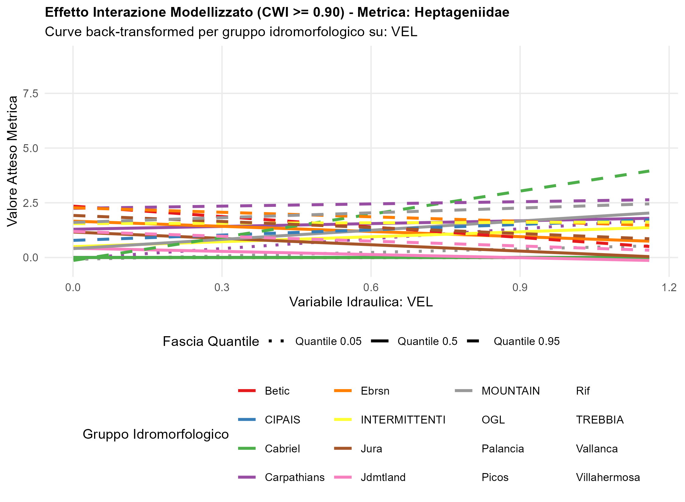
| Variabili Selezionate | VEL |
|---|---|
| Interazioni Attive | (VEL):GROUP |
| Modello Intercetta | no |
| Formula di Riferimento | VAR ~ 1 + VEL + (VEL):GROUP |
| Incertezza Totale CV (σ) | 0.0745 |
| Approvazione Modello Globale | NO (CWI Globale: 0.6835) |
| Ammissibilit` Floor (0.05) | NO (CWI Quantile: 0) |
| Ammissibilit` Mediana (0.50) | NO (CWI Quantile: 0.9255) |
| Ammissibilit` Ceiling (0.95) | NO (CWI Quantile: 0.9255) |
Grafici non generati: il modello globale o i singoli quantili non hanno raggiunto la stabilit` critica di CWI ≥ 0.90.
| Variabili Selezionate | exp(VEL) |
|---|---|
| Interazioni Attive | (exp(VEL)):GROUP |
| Modello Intercetta | full |
| Formula di Riferimento | VAR ~ 1 + exp(VEL) + (exp(VEL)):GROUP + GROUP + SUB |
| Incertezza Totale CV (σ) | 0.0338 |
| Approvazione Modello Globale | NO (CWI Globale: 0.6922) |
| Ammissibilit` Floor (0.05) | NO (CWI Quantile: 0.9659) |
| Ammissibilit` Mediana (0.50) | NO (CWI Quantile: 0.9662) |
| Ammissibilit` Ceiling (0.95) | NO (CWI Quantile: 0.9662) |
Grafici non generati: il modello globale o i singoli quantili non hanno raggiunto la stabilit` critica di CWI ≥ 0.90.
| Variabili Selezionate | |
|---|---|
| Interazioni Attive | |
| Modello Intercetta | no_sub |
| Formula di Riferimento | VAR ~ 1 + GROUP |
| Incertezza Totale CV (σ) | 0.0108 |
| Approvazione Modello Globale | NO (CWI Globale: 0.4946) |
| Ammissibilit` Floor (0.05) | NO (CWI Quantile: 0.4946) |
| Ammissibilit` Mediana (0.50) | NO (CWI Quantile: 0.4946) |
| Ammissibilit` Ceiling (0.95) | NO (CWI Quantile: 0.4946) |
Grafici non generati: il modello globale o i singoli quantili non hanno raggiunto la stabilit` critica di CWI ≥ 0.90.
| Variabili Selezionate | |
|---|---|
| Interazioni Attive | |
| Modello Intercetta | no_sub |
| Formula di Riferimento | VAR ~ 1 + GROUP |
| Incertezza Totale CV (σ) | 0.0186 |
| Approvazione Modello Globale | NO (CWI Globale: 0.4907) |
| Ammissibilit` Floor (0.05) | NO (CWI Quantile: 0.4907) |
| Ammissibilit` Mediana (0.50) | NO (CWI Quantile: 0.4907) |
| Ammissibilit` Ceiling (0.95) | NO (CWI Quantile: 0.4907) |
Grafici non generati: il modello globale o i singoli quantili non hanno raggiunto la stabilit` critica di CWI ≥ 0.90.
| Variabili Selezionate | |
|---|---|
| Interazioni Attive | |
| Modello Intercetta | no |
| Formula di Riferimento | VAR ~ 1 |
| Incertezza Totale CV (σ) | 0.0512 |
| Approvazione Modello Globale | NO (CWI Globale: 0.4744) |
| Ammissibilit` Floor (0.05) | NO (CWI Quantile: 0.4744) |
| Ammissibilit` Mediana (0.50) | NO (CWI Quantile: 0.4744) |
| Ammissibilit` Ceiling (0.95) | NO (CWI Quantile: 0.4744) |
Grafici non generati: il modello globale o i singoli quantili non hanno raggiunto la stabilit` critica di CWI ≥ 0.90.
| Variabili Selezionate | VEL |
|---|---|
| Interazioni Attive | (VEL):GROUP |
| Modello Intercetta | no_sub |
| Formula di Riferimento | VAR ~ 1 + VEL + (VEL):GROUP + GROUP |
| Incertezza Totale CV (σ) | 0.0524 |
| Approvazione Modello Globale | YES (CWI Globale: 0.8146) |
| Ammissibilit` Floor (0.05) | NO (CWI Quantile: 0.6401) |
| Ammissibilit` Mediana (0.50) | YES (CWI Quantile: 0.9476) |
| Ammissibilit` Ceiling (0.95) | YES (CWI Quantile: 0.9476) |
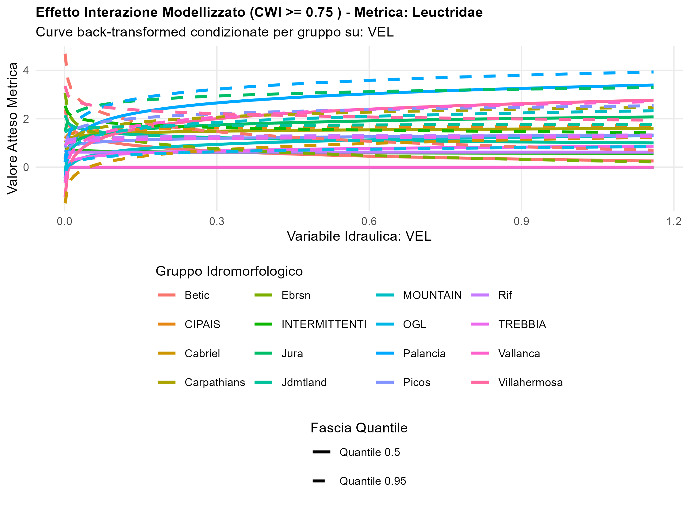
| Variabili Selezionate | |
|---|---|
| Interazioni Attive | |
| Modello Intercetta | no_sub |
| Formula di Riferimento | VAR ~ 1 + GROUP |
| Incertezza Totale CV (σ) | 0.0111 |
| Approvazione Modello Globale | NO (CWI Globale: 0.4945) |
| Ammissibilit` Floor (0.05) | NO (CWI Quantile: 0.4945) |
| Ammissibilit` Mediana (0.50) | NO (CWI Quantile: 0.4945) |
| Ammissibilit` Ceiling (0.95) | NO (CWI Quantile: 0.4945) |
Grafici non generati: il modello globale o i singoli quantili non hanno raggiunto la stabilit` critica di CWI ≥ 0.90.
| Variabili Selezionate | |
|---|---|
| Interazioni Attive | |
| Modello Intercetta | no_sub |
| Formula di Riferimento | VAR ~ 1 + GROUP |
| Incertezza Totale CV (σ) | 0.0119 |
| Approvazione Modello Globale | NO (CWI Globale: 0.4941) |
| Ammissibilit` Floor (0.05) | NO (CWI Quantile: 0.4941) |
| Ammissibilit` Mediana (0.50) | NO (CWI Quantile: 0.4941) |
| Ammissibilit` Ceiling (0.95) | NO (CWI Quantile: 0.4941) |
Grafici non generati: il modello globale o i singoli quantili non hanno raggiunto la stabilit` critica di CWI ≥ 0.90.
| Variabili Selezionate | log10(DEPTH) |
|---|---|
| Interazioni Attive | (log10(DEPTH)):GROUP |
| Modello Intercetta | no |
| Formula di Riferimento | VAR ~ 1 + log10(DEPTH) + (log10(DEPTH)):GROUP |
| Incertezza Totale CV (σ) | 0.0123 |
| Approvazione Modello Globale | NO (CWI Globale: 0.545) |
| Ammissibilit` Floor (0.05) | NO (CWI Quantile: 0) |
| Ammissibilit` Mediana (0.50) | NO (CWI Quantile: 0.9877) |
| Ammissibilit` Ceiling (0.95) | NO (CWI Quantile: 0.9877) |
Grafici non generati: il modello globale o i singoli quantili non hanno raggiunto la stabilit` critica di CWI ≥ 0.90.
| Variabili Selezionate | |
|---|---|
| Interazioni Attive | |
| Modello Intercetta | no_group |
| Formula di Riferimento | VAR ~ 1 + SUB |
| Incertezza Totale CV (σ) | 0.0104 |
| Approvazione Modello Globale | NO (CWI Globale: 0.4948) |
| Ammissibilit` Floor (0.05) | NO (CWI Quantile: 0.4948) |
| Ammissibilit` Mediana (0.50) | NO (CWI Quantile: 0.4948) |
| Ammissibilit` Ceiling (0.95) | NO (CWI Quantile: 0.4948) |
Grafici non generati: il modello globale o i singoli quantili non hanno raggiunto la stabilit` critica di CWI ≥ 0.90.
| Variabili Selezionate | |
|---|---|
| Interazioni Attive | |
| Modello Intercetta | no_sub |
| Formula di Riferimento | VAR ~ 1 + GROUP |
| Incertezza Totale CV (σ) | 0.0311 |
| Approvazione Modello Globale | NO (CWI Globale: 0.4845) |
| Ammissibilit` Floor (0.05) | NO (CWI Quantile: 0.4845) |
| Ammissibilit` Mediana (0.50) | NO (CWI Quantile: 0.4845) |
| Ammissibilit` Ceiling (0.95) | NO (CWI Quantile: 0.4845) |
Grafici non generati: il modello globale o i singoli quantili non hanno raggiunto la stabilit` critica di CWI ≥ 0.90.
| Variabili Selezionate | |
|---|---|
| Interazioni Attive | |
| Modello Intercetta | no_sub |
| Formula di Riferimento | VAR ~ 1 + GROUP |
| Incertezza Totale CV (σ) | 0.0111 |
| Approvazione Modello Globale | NO (CWI Globale: 0.4945) |
| Ammissibilit` Floor (0.05) | NO (CWI Quantile: 0.4945) |
| Ammissibilit` Mediana (0.50) | NO (CWI Quantile: 0.4945) |
| Ammissibilit` Ceiling (0.95) | NO (CWI Quantile: 0.4945) |
Grafici non generati: il modello globale o i singoli quantili non hanno raggiunto la stabilit` critica di CWI ≥ 0.90.
| Variabili Selezionate | VEL |
|---|---|
| Interazioni Attive | (VEL):GROUP |
| Modello Intercetta | no_sub |
| Formula di Riferimento | VAR ~ 1 + VEL + (VEL):GROUP + GROUP |
| Incertezza Totale CV (σ) | 0.0351 |
| Approvazione Modello Globale | NO (CWI Globale: 0.6472) |
| Ammissibilit` Floor (0.05) | NO (CWI Quantile: 0) |
| Ammissibilit` Mediana (0.50) | NO (CWI Quantile: 0.9649) |
| Ammissibilit` Ceiling (0.95) | NO (CWI Quantile: 0.9649) |
Grafici non generati: il modello globale o i singoli quantili non hanno raggiunto la stabilit` critica di CWI ≥ 0.90.
| Variabili Selezionate | |
|---|---|
| Interazioni Attive | |
| Modello Intercetta | no |
| Formula di Riferimento | VAR ~ 1 |
| Incertezza Totale CV (σ) | 0.0114 |
| Approvazione Modello Globale | NO (CWI Globale: 0.4943) |
| Ammissibilit` Floor (0.05) | NO (CWI Quantile: 0.4943) |
| Ammissibilit` Mediana (0.50) | NO (CWI Quantile: 0.4943) |
| Ammissibilit` Ceiling (0.95) | NO (CWI Quantile: 0.4943) |
Grafici non generati: il modello globale o i singoli quantili non hanno raggiunto la stabilit` critica di CWI ≥ 0.90.
| Variabili Selezionate | log10(DEPTH) |
|---|---|
| Interazioni Attive | (log10(DEPTH)):GROUP |
| Modello Intercetta | no_sub |
| Formula di Riferimento | VAR ~ 1 + log10(DEPTH) + (log10(DEPTH)):GROUP + GROUP |
| Incertezza Totale CV (σ) | 0.0463 |
| Approvazione Modello Globale | NO (CWI Globale: 0.5055) |
| Ammissibilit` Floor (0.05) | NO (CWI Quantile: 0.9537) |
| Ammissibilit` Mediana (0.50) | NO (CWI Quantile: 0.8019) |
| Ammissibilit` Ceiling (0.95) | NO (CWI Quantile: 0.9537) |
Grafici non generati: il modello globale o i singoli quantili non hanno raggiunto la stabilit` critica di CWI ≥ 0.90.
| Variabili Selezionate | |
|---|---|
| Interazioni Attive | |
| Modello Intercetta | no_sub |
| Formula di Riferimento | VAR ~ 1 + GROUP |
| Incertezza Totale CV (σ) | 0.0227 |
| Approvazione Modello Globale | NO (CWI Globale: 0.4887) |
| Ammissibilit` Floor (0.05) | NO (CWI Quantile: 0.4887) |
| Ammissibilit` Mediana (0.50) | NO (CWI Quantile: 0.4887) |
| Ammissibilit` Ceiling (0.95) | NO (CWI Quantile: 0.4887) |
Grafici non generati: il modello globale o i singoli quantili non hanno raggiunto la stabilit` critica di CWI ≥ 0.90.
| Variabili Selezionate | DEPTH |
|---|---|
| Interazioni Attive | (DEPTH):GROUP |
| Modello Intercetta | no_sub |
| Formula di Riferimento | VAR ~ 1 + DEPTH + (DEPTH):GROUP + GROUP |
| Incertezza Totale CV (σ) | 0.0544 |
| Approvazione Modello Globale | NO (CWI Globale: 0.7148) |
| Ammissibilit` Floor (0.05) | NO (CWI Quantile: 0) |
| Ammissibilit` Mediana (0.50) | NO (CWI Quantile: 0.9456) |
| Ammissibilit` Ceiling (0.95) | NO (CWI Quantile: 0.9456) |
Grafici non generati: il modello globale o i singoli quantili non hanno raggiunto la stabilit` critica di CWI ≥ 0.90.
| Variabili Selezionate | VEL |
|---|---|
| Interazioni Attive | (VEL):GROUP |
| Modello Intercetta | no_sub |
| Formula di Riferimento | VAR ~ 1 + VEL + (VEL):GROUP + GROUP |
| Incertezza Totale CV (σ) | 0.0935 |
| Approvazione Modello Globale | NO (CWI Globale: 0.6957) |
| Ammissibilit` Floor (0.05) | NO (CWI Quantile: 0) |
| Ammissibilit` Mediana (0.50) | NO (CWI Quantile: 0.9065) |
| Ammissibilit` Ceiling (0.95) | NO (CWI Quantile: 0.9065) |
Grafici non generati: il modello globale o i singoli quantili non hanno raggiunto la stabilit` critica di CWI ≥ 0.90.
| Variabili Selezionate | |
|---|---|
| Interazioni Attive | |
| Modello Intercetta | no |
| Formula di Riferimento | VAR ~ 1 |
| Incertezza Totale CV (σ) | 0.0341 |
| Approvazione Modello Globale | NO (CWI Globale: 0.483) |
| Ammissibilit` Floor (0.05) | NO (CWI Quantile: 0.483) |
| Ammissibilit` Mediana (0.50) | NO (CWI Quantile: 0.483) |
| Ammissibilit` Ceiling (0.95) | NO (CWI Quantile: 0.483) |
Grafici non generati: il modello globale o i singoli quantili non hanno raggiunto la stabilit` critica di CWI ≥ 0.90.
| Variabili Selezionate | exp(VEL) exp(DEPTH) |
|---|---|
| Interazioni Attive | |
| Modello Intercetta | full |
| Formula di Riferimento | VAR ~ 1 + exp(VEL) + exp(DEPTH) + GROUP + SUB |
| Incertezza Totale CV (σ) | 0.0374 |
| Approvazione Modello Globale | NO (CWI Globale: 0.5761) |
| Ammissibilit` Floor (0.05) | NO (CWI Quantile: 0.0421) |
| Ammissibilit` Mediana (0.50) | NO (CWI Quantile: 0.9626) |
| Ammissibilit` Ceiling (0.95) | NO (CWI Quantile: 0.9626) |
Grafici non generati: il modello globale o i singoli quantili non hanno raggiunto la stabilit` critica di CWI ≥ 0.90.
| Variabili Selezionate | |
|---|---|
| Interazioni Attive | |
| Modello Intercetta | no |
| Formula di Riferimento | VAR ~ 1 |
| Incertezza Totale CV (σ) | 0.0291 |
| Approvazione Modello Globale | NO (CWI Globale: 0.4855) |
| Ammissibilit` Floor (0.05) | NO (CWI Quantile: 0.4855) |
| Ammissibilit` Mediana (0.50) | NO (CWI Quantile: 0.4855) |
| Ammissibilit` Ceiling (0.95) | NO (CWI Quantile: 0.4855) |
Grafici non generati: il modello globale o i singoli quantili non hanno raggiunto la stabilit` critica di CWI ≥ 0.90.
| Variabili Selezionate | |
|---|---|
| Interazioni Attive | |
| Modello Intercetta | no |
| Formula di Riferimento | VAR ~ 1 |
| Incertezza Totale CV (σ) | 0.0076 |
| Approvazione Modello Globale | NO (CWI Globale: 0.4962) |
| Ammissibilit` Floor (0.05) | NO (CWI Quantile: 0.4962) |
| Ammissibilit` Mediana (0.50) | NO (CWI Quantile: 0.4962) |
| Ammissibilit` Ceiling (0.95) | NO (CWI Quantile: 0.4962) |
Grafici non generati: il modello globale o i singoli quantili non hanno raggiunto la stabilit` critica di CWI ≥ 0.90.
| Variabili Selezionate | |
|---|---|
| Interazioni Attive | |
| Modello Intercetta | no_group |
| Formula di Riferimento | VAR ~ 1 + SUB |
| Incertezza Totale CV (σ) | 0.0078 |
| Approvazione Modello Globale | NO (CWI Globale: 0.4961) |
| Ammissibilit` Floor (0.05) | NO (CWI Quantile: 0.4961) |
| Ammissibilit` Mediana (0.50) | NO (CWI Quantile: 0.4961) |
| Ammissibilit` Ceiling (0.95) | NO (CWI Quantile: 0.4961) |
Grafici non generati: il modello globale o i singoli quantili non hanno raggiunto la stabilit` critica di CWI ≥ 0.90.
| Variabili Selezionate | exp(VEL) DEPTH |
|---|---|
| Interazioni Attive | |
| Modello Intercetta | no_sub |
| Formula di Riferimento | VAR ~ 1 + exp(VEL) + DEPTH + GROUP |
| Incertezza Totale CV (σ) | 0.0147 |
| Approvazione Modello Globale | YES (CWI Globale: 0.976) |
| Ammissibilit` Floor (0.05) | YES (CWI Quantile: 0.9836) |
| Ammissibilit` Mediana (0.50) | YES (CWI Quantile: 0.9853) |
| Ammissibilit` Ceiling (0.95) | YES (CWI Quantile: 0.9853) |
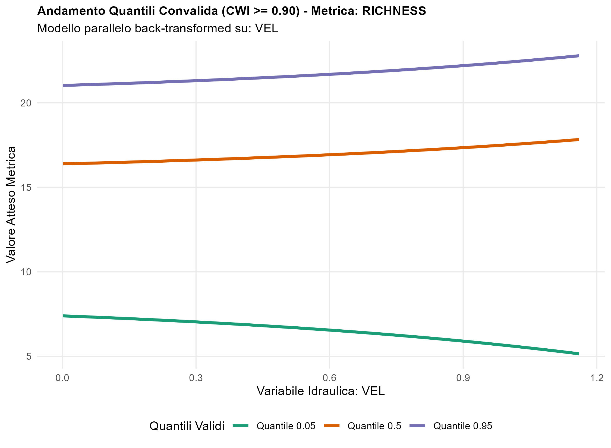
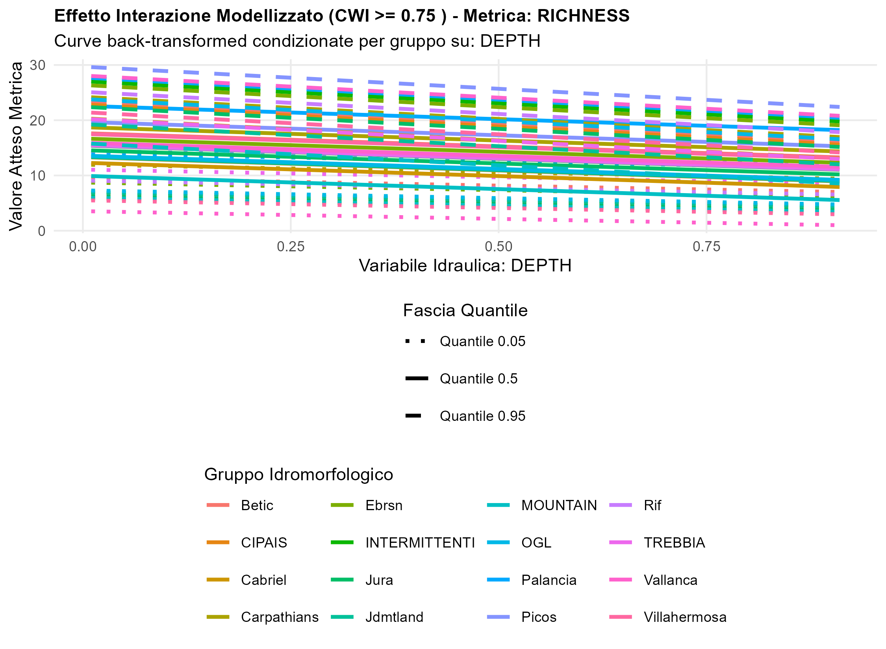
| Variabili Selezionate | log10(VEL) exp(DEPTH) |
|---|---|
| Interazioni Attive | |
| Modello Intercetta | no_sub |
| Formula di Riferimento | VAR ~ 1 + log10(VEL) + exp(DEPTH) + GROUP |
| Incertezza Totale CV (σ) | 0.1168 |
| Approvazione Modello Globale | YES (CWI Globale: 0.8818) |
| Ammissibilit` Floor (0.05) | YES (CWI Quantile: 0.8736) |
| Ammissibilit` Mediana (0.50) | YES (CWI Quantile: 0.8832) |
| Ammissibilit` Ceiling (0.95) | YES (CWI Quantile: 0.8832) |
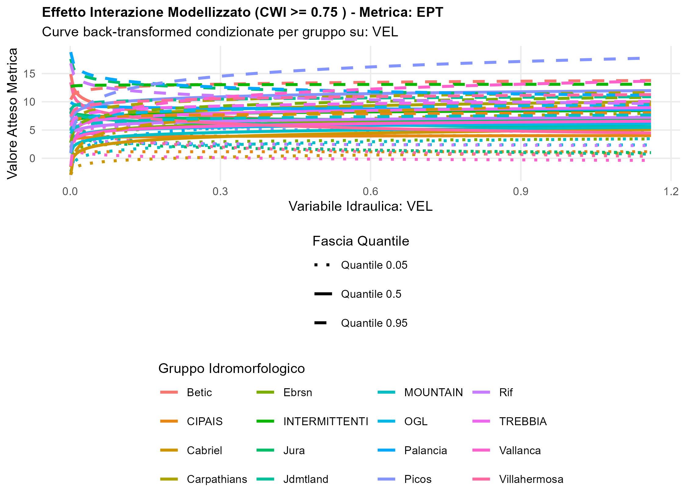
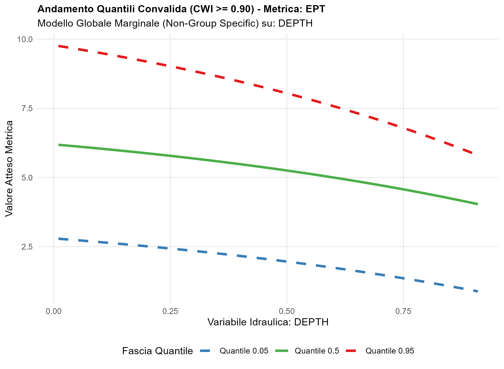
| Variabili Selezionate | poly(VEL,2) log10(DEPTH) |
|---|---|
| Interazioni Attive | |
| Modello Intercetta | full |
| Formula di Riferimento | VAR ~ 1 + poly(VEL, 2) + log10(DEPTH) + GROUP + SUB |
| Incertezza Totale CV (σ) | 0.0234 |
| Approvazione Modello Globale | YES (CWI Globale: 0.9419) |
| Ammissibilit` Floor (0.05) | YES (CWI Quantile: 0.8844) |
| Ammissibilit` Mediana (0.50) | YES (CWI Quantile: 0.9766) |
| Ammissibilit` Ceiling (0.95) | YES (CWI Quantile: 0.9766) |
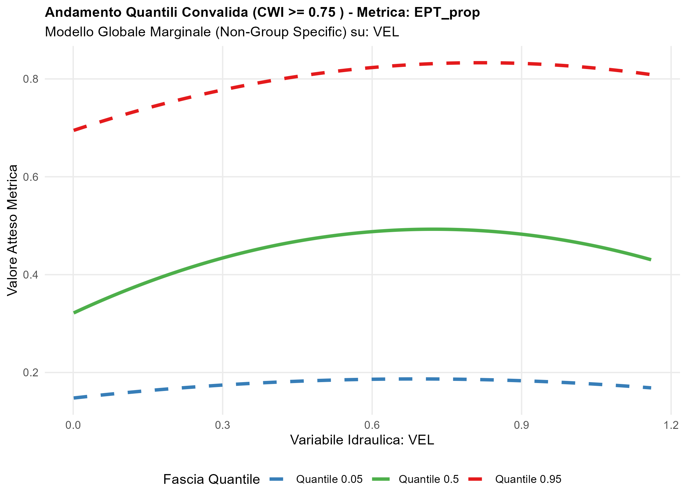
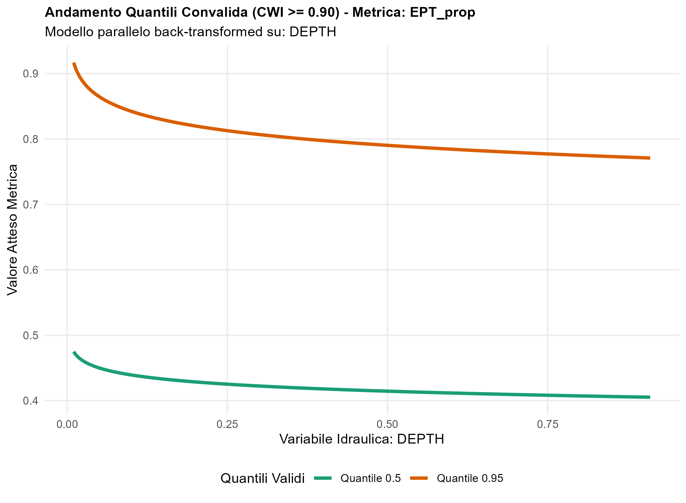
| Variabili Selezionate | poly(VEL,2) DEPTH |
|---|---|
| Interazioni Attive | |
| Modello Intercetta | full |
| Formula di Riferimento | VAR ~ 1 + poly(VEL, 2) + DEPTH + GROUP + SUB |
| Incertezza Totale CV (σ) | 0.0649 |
| Approvazione Modello Globale | YES (CWI Globale: 0.9351) |
| Ammissibilit` Floor (0.05) | YES (CWI Quantile: 0.9351) |
| Ammissibilit` Mediana (0.50) | YES (CWI Quantile: 0.9351) |
| Ammissibilit` Ceiling (0.95) | YES (CWI Quantile: 0.9351) |
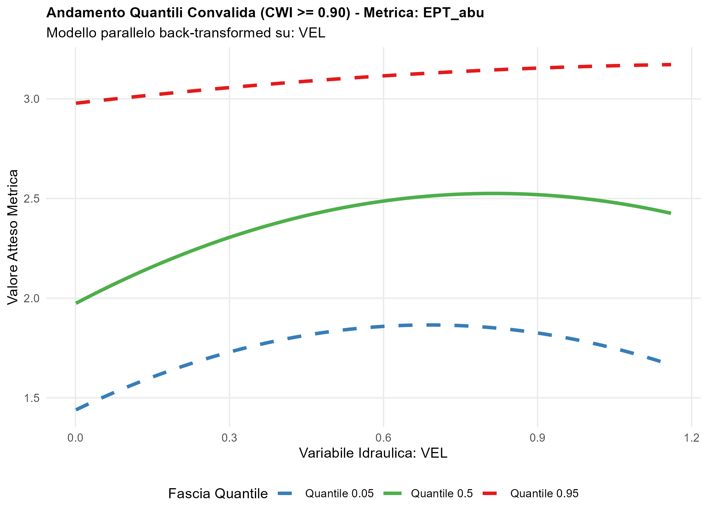
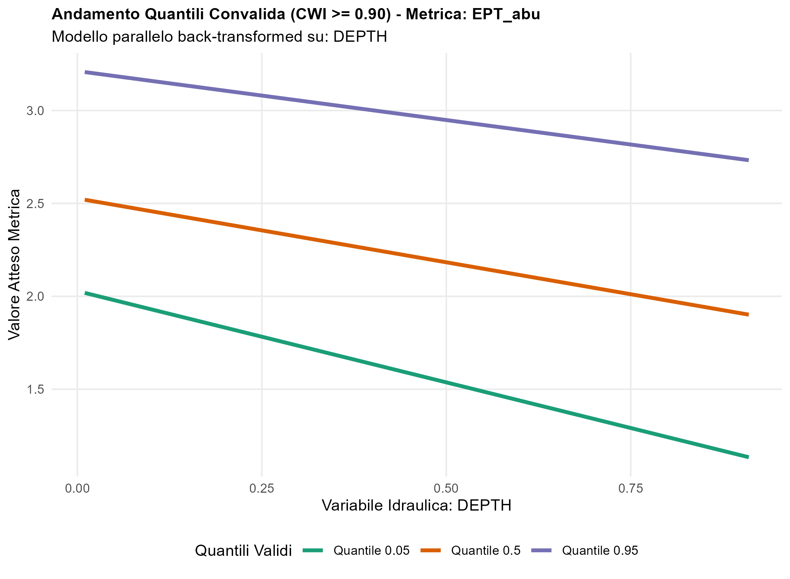
| Variabili Selezionate | |
|---|---|
| Interazioni Attive | |
| Modello Intercetta | no_sub |
| Formula di Riferimento | VAR ~ 1 + GROUP |
| Incertezza Totale CV (σ) | 0.0063 |
| Approvazione Modello Globale | NO (CWI Globale: 0.4968) |
| Ammissibilit` Floor (0.05) | NO (CWI Quantile: 0.4968) |
| Ammissibilit` Mediana (0.50) | NO (CWI Quantile: 0.4968) |
| Ammissibilit` Ceiling (0.95) | NO (CWI Quantile: 0.4968) |
Grafici non generati: il modello globale o i singoli quantili non hanno raggiunto la stabilit` critica di CWI ≥ 0.90.
| Variabili Selezionate | log10(DEPTH) |
|---|---|
| Interazioni Attive | |
| Modello Intercetta | no_sub |
| Formula di Riferimento | VAR ~ 1 + log10(DEPTH) + GROUP |
| Incertezza Totale CV (σ) | 0.0603 |
| Approvazione Modello Globale | NO (CWI Globale: 0.6422) |
| Ammissibilit` Floor (0.05) | NO (CWI Quantile: 0.1756) |
| Ammissibilit` Mediana (0.50) | NO (CWI Quantile: 0.9256) |
| Ammissibilit` Ceiling (0.95) | NO (CWI Quantile: 0.611) |
Grafici non generati: il modello globale o i singoli quantili non hanno raggiunto la stabilit` critica di CWI ≥ 0.90.
| Variabili Selezionate | exp(VEL) DEPTH |
|---|---|
| Interazioni Attive | |
| Modello Intercetta | no_sub |
| Formula di Riferimento | VAR ~ 1 + exp(VEL) + DEPTH + GROUP |
| Incertezza Totale CV (σ) | 0.0672 |
| Approvazione Modello Globale | NO (CWI Globale: 0.6731) |
| Ammissibilit` Floor (0.05) | NO (CWI Quantile: 0.0455) |
| Ammissibilit` Mediana (0.50) | NO (CWI Quantile: 0.9328) |
| Ammissibilit` Ceiling (0.95) | NO (CWI Quantile: 0.9328) |
Grafici non generati: il modello globale o i singoli quantili non hanno raggiunto la stabilit` critica di CWI ≥ 0.90.
| Variabili Selezionate | |
|---|---|
| Interazioni Attive | |
| Modello Intercetta | no_sub |
| Formula di Riferimento | VAR ~ 1 + GROUP |
| Incertezza Totale CV (σ) | 0.0539 |
| Approvazione Modello Globale | NO (CWI Globale: 0.473) |
| Ammissibilit` Floor (0.05) | NO (CWI Quantile: 0.473) |
| Ammissibilit` Mediana (0.50) | NO (CWI Quantile: 0.473) |
| Ammissibilit` Ceiling (0.95) | NO (CWI Quantile: 0.473) |
Grafici non generati: il modello globale o i singoli quantili non hanno raggiunto la stabilit` critica di CWI ≥ 0.90.
| Variabili Selezionate | log10(VEL) DEPTH |
|---|---|
| Interazioni Attive | (log10(VEL)):GROUP |
| Modello Intercetta | no_sub |
| Formula di Riferimento | VAR ~ 1 + log10(VEL) + DEPTH + (log10(VEL)):GROUP + GROUP |
| Incertezza Totale CV (σ) | 0.0505 |
| Approvazione Modello Globale | YES (CWI Globale: 0.9495) |
| Ammissibilit` Floor (0.05) | YES (CWI Quantile: 0.9495) |
| Ammissibilit` Mediana (0.50) | YES (CWI Quantile: 0.9495) |
| Ammissibilit` Ceiling (0.95) | YES (CWI Quantile: 0.9495) |
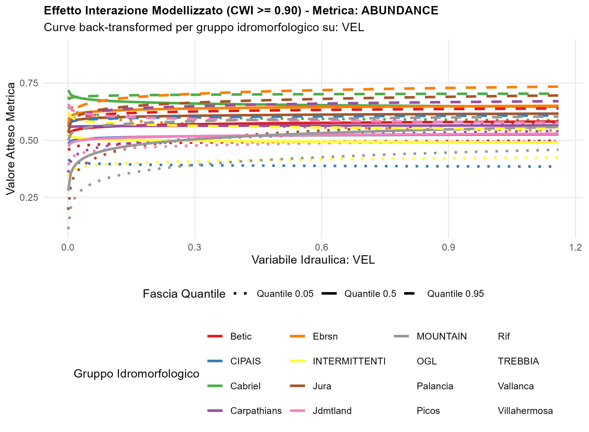
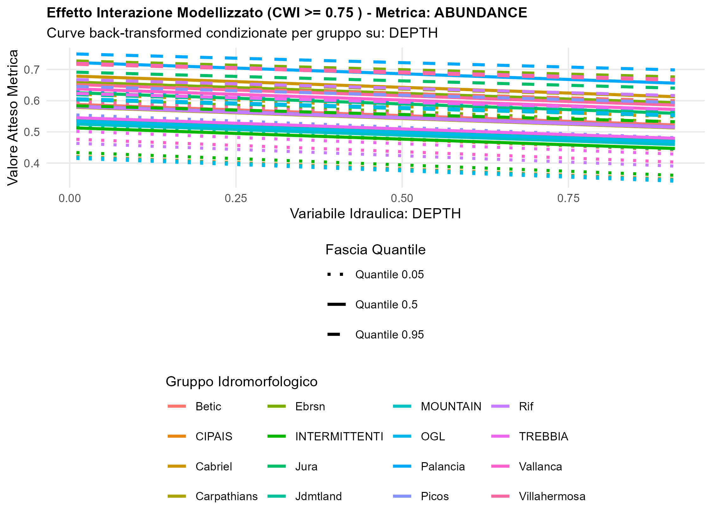
| Variabili Selezionate | exp(DEPTH) |
|---|---|
| Interazioni Attive | |
| Modello Intercetta | no_sub |
| Formula di Riferimento | VAR ~ 1 + exp(DEPTH) + GROUP |
| Incertezza Totale CV (σ) | 0.0307 |
| Approvazione Modello Globale | YES (CWI Globale: 0.7745) |
| Ammissibilit` Floor (0.05) | NO (CWI Quantile: 0.365) |
| Ammissibilit` Mediana (0.50) | YES (CWI Quantile: 0.905) |
| Ammissibilit` Ceiling (0.95) | YES (CWI Quantile: 0.9691) |
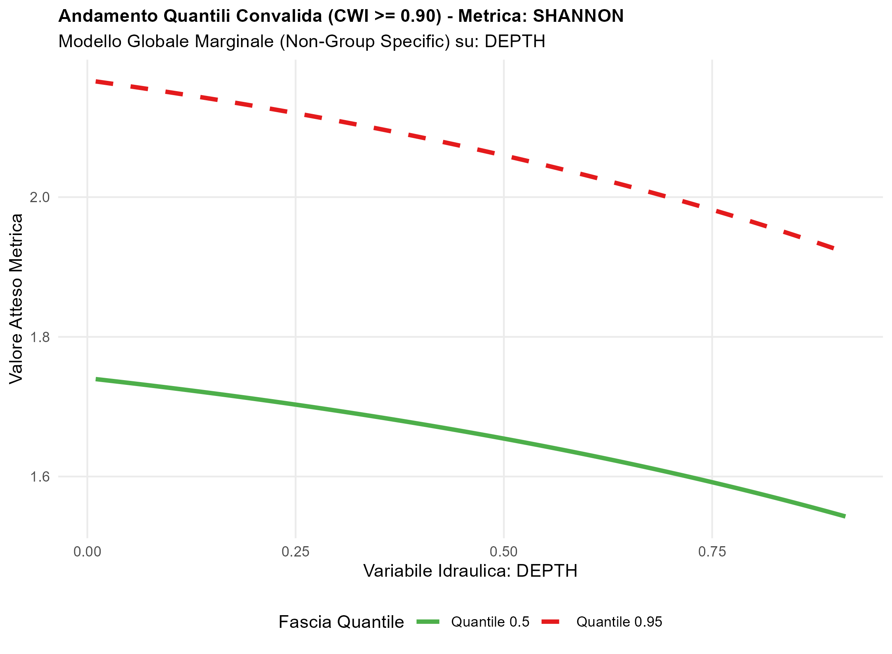
| Variabili Selezionate | poly(DEPTH,2) |
|---|---|
| Interazioni Attive | |
| Modello Intercetta | no_sub |
| Formula di Riferimento | VAR ~ 1 + poly(DEPTH, 2) + GROUP |
| Incertezza Totale CV (σ) | 0.0321 |
| Approvazione Modello Globale | YES (CWI Globale: 0.9665) |
| Ammissibilit` Floor (0.05) | YES (CWI Quantile: 0.9666) |
| Ammissibilit` Mediana (0.50) | YES (CWI Quantile: 0.9679) |
| Ammissibilit` Ceiling (0.95) | YES (CWI Quantile: 0.9679) |
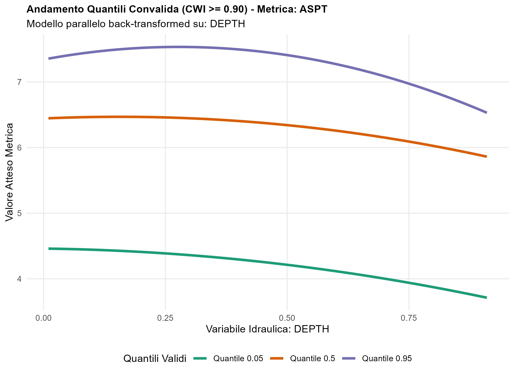
| Variabili Selezionate | poly(VEL,2) poly(DEPTH,2) |
|---|---|
| Interazioni Attive | |
| Modello Intercetta | no_sub |
| Formula di Riferimento | VAR ~ 1 + poly(VEL, 2) + poly(DEPTH, 2) + GROUP |
| Incertezza Totale CV (σ) | 0.0702 |
| Approvazione Modello Globale | YES (CWI Globale: 0.9298) |
| Ammissibilit` Floor (0.05) | YES (CWI Quantile: 0.9298) |
| Ammissibilit` Mediana (0.50) | YES (CWI Quantile: 0.9298) |
| Ammissibilit` Ceiling (0.95) | YES (CWI Quantile: 0.9298) |
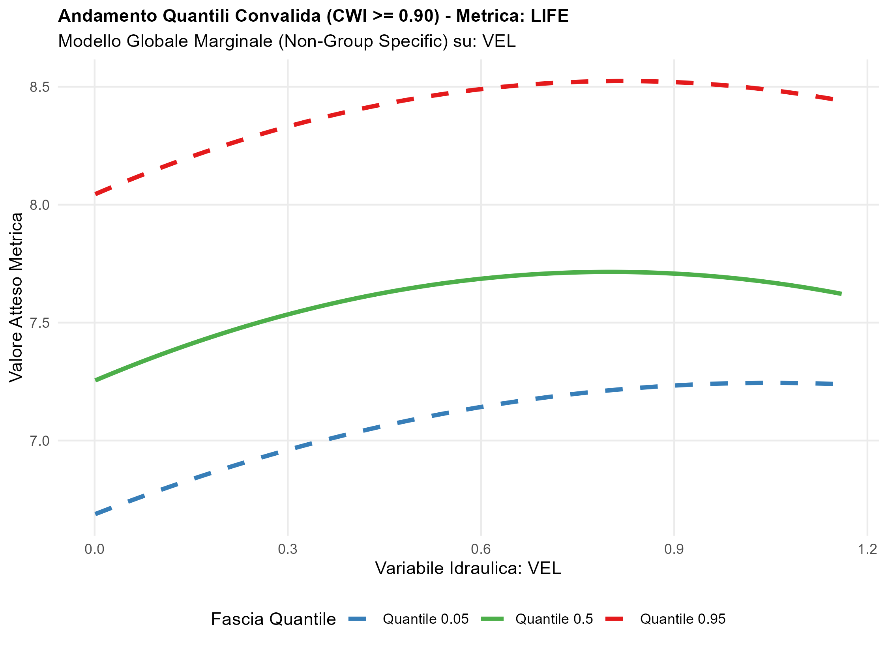
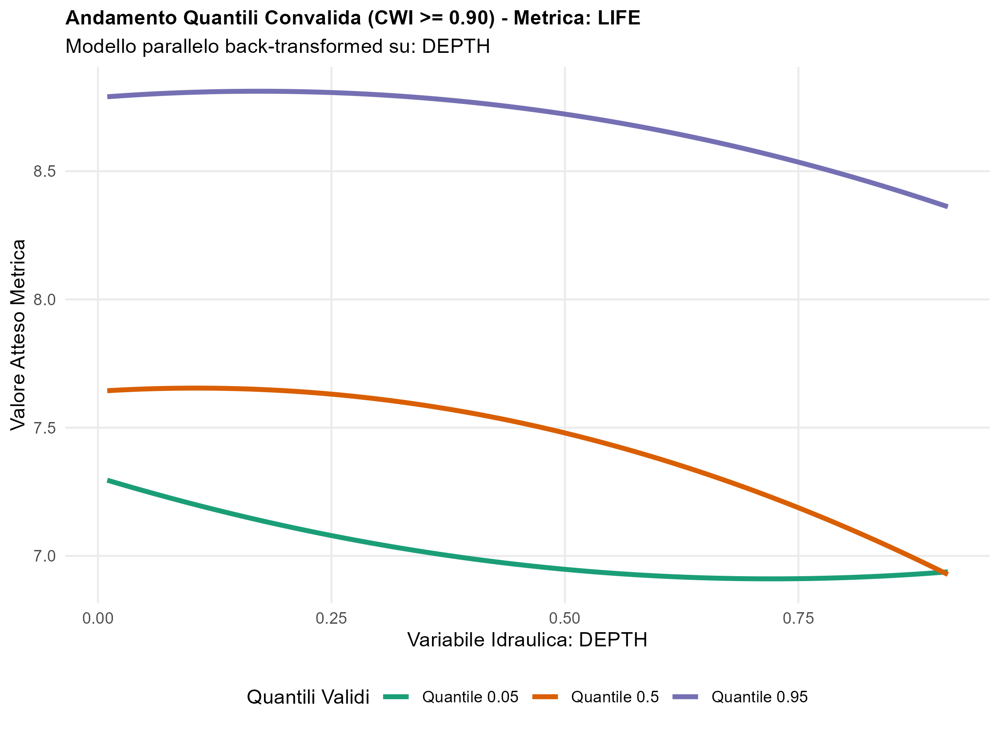
| Variabili Selezionate | |
|---|---|
| Interazioni Attive | |
| Modello Intercetta | no_sub |
| Formula di Riferimento | VAR ~ 1 + GROUP |
| Incertezza Totale CV (σ) | 0.0635 |
| Approvazione Modello Globale | NO (CWI Globale: 0.4682) |
| Ammissibilit` Floor (0.05) | NO (CWI Quantile: 0.4682) |
| Ammissibilit` Mediana (0.50) | NO (CWI Quantile: 0.4682) |
| Ammissibilit` Ceiling (0.95) | NO (CWI Quantile: 0.4682) |
Grafici non generati: il modello globale o i singoli quantili non hanno raggiunto la stabilit` critica di CWI ≥ 0.90.
| Variabili Selezionate | VEL |
|---|---|
| Interazioni Attive | |
| Modello Intercetta | full |
| Formula di Riferimento | VAR ~ 1 + VEL + GROUP + SUB |
| Incertezza Totale CV (σ) | 0.0239 |
| Approvazione Modello Globale | YES (CWI Globale: 0.8055) |
| Ammissibilit` Floor (0.05) | NO (CWI Quantile: 0.6302) |
| Ammissibilit` Mediana (0.50) | YES (CWI Quantile: 0.9502) |
| Ammissibilit` Ceiling (0.95) | YES (CWI Quantile: 0.9761) |
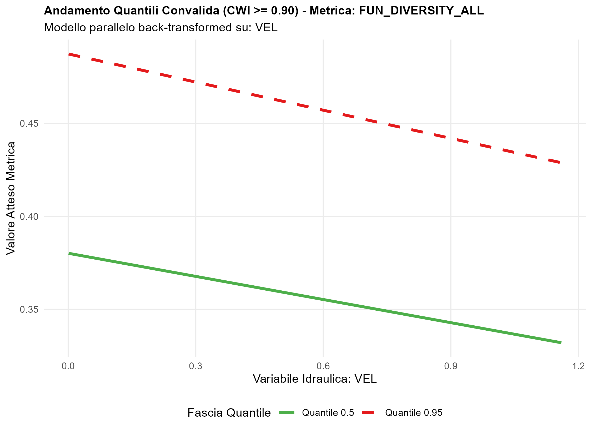
| Variabili Selezionate | |
|---|---|
| Interazioni Attive | |
| Modello Intercetta | no_sub |
| Formula di Riferimento | VAR ~ 1 + GROUP |
| Incertezza Totale CV (σ) | 0.0491 |
| Approvazione Modello Globale | NO (CWI Globale: 0.4755) |
| Ammissibilit` Floor (0.05) | NO (CWI Quantile: 0.4755) |
| Ammissibilit` Mediana (0.50) | NO (CWI Quantile: 0.4755) |
| Ammissibilit` Ceiling (0.95) | NO (CWI Quantile: 0.4755) |
Grafici non generati: il modello globale o i singoli quantili non hanno raggiunto la stabilit` critica di CWI ≥ 0.90.
| Variabili Selezionate | VEL |
|---|---|
| Interazioni Attive | |
| Modello Intercetta | full |
| Formula di Riferimento | VAR ~ 1 + VEL + GROUP + SUB |
| Incertezza Totale CV (σ) | 0.0376 |
| Approvazione Modello Globale | YES (CWI Globale: 0.7896) |
| Ammissibilit` Floor (0.05) | NO (CWI Quantile: 0.5087) |
| Ammissibilit` Mediana (0.50) | YES (CWI Quantile: 0.9387) |
| Ammissibilit` Ceiling (0.95) | YES (CWI Quantile: 0.9624) |
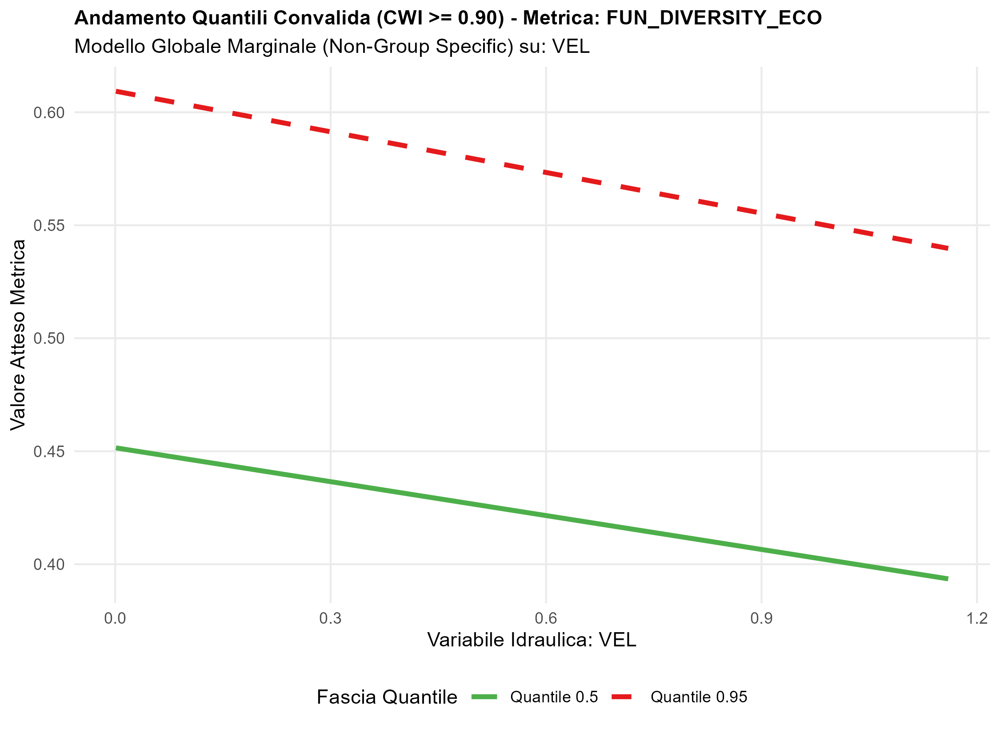
| Variabili Selezionate | |
|---|---|
| Interazioni Attive | |
| Modello Intercetta | no_sub |
| Formula di Riferimento | VAR ~ 1 + GROUP |
| Incertezza Totale CV (σ) | 0.0135 |
| Approvazione Modello Globale | NO (CWI Globale: 0.4932) |
| Ammissibilit` Floor (0.05) | NO (CWI Quantile: 0.4932) |
| Ammissibilit` Mediana (0.50) | NO (CWI Quantile: 0.4932) |
| Ammissibilit` Ceiling (0.95) | NO (CWI Quantile: 0.4932) |
Grafici non generati: il modello globale o i singoli quantili non hanno raggiunto la stabilit` critica di CWI ≥ 0.90.
| Variabili Selezionate | |
|---|---|
| Interazioni Attive | |
| Modello Intercetta | no_sub |
| Formula di Riferimento | VAR ~ 1 + GROUP |
| Incertezza Totale CV (σ) | 0.023 |
| Approvazione Modello Globale | NO (CWI Globale: 0.4885) |
| Ammissibilit` Floor (0.05) | NO (CWI Quantile: 0.4885) |
| Ammissibilit` Mediana (0.50) | NO (CWI Quantile: 0.4885) |
| Ammissibilit` Ceiling (0.95) | NO (CWI Quantile: 0.4885) |
Grafici non generati: il modello globale o i singoli quantili non hanno raggiunto la stabilit` critica di CWI ≥ 0.90.
| Variabili Selezionate | poly(VEL,2) log10(DEPTH) |
|---|---|
| Interazioni Attive | |
| Modello Intercetta | full |
| Formula di Riferimento | VAR ~ 1 + poly(VEL, 2) + log10(DEPTH) + GROUP + SUB |
| Incertezza Totale CV (σ) | 0.0429 |
| Approvazione Modello Globale | YES (CWI Globale: 0.9571) |
| Ammissibilit` Floor (0.05) | YES (CWI Quantile: 0.9571) |
| Ammissibilit` Mediana (0.50) | YES (CWI Quantile: 0.9571) |
| Ammissibilit` Ceiling (0.95) | YES (CWI Quantile: 0.9571) |
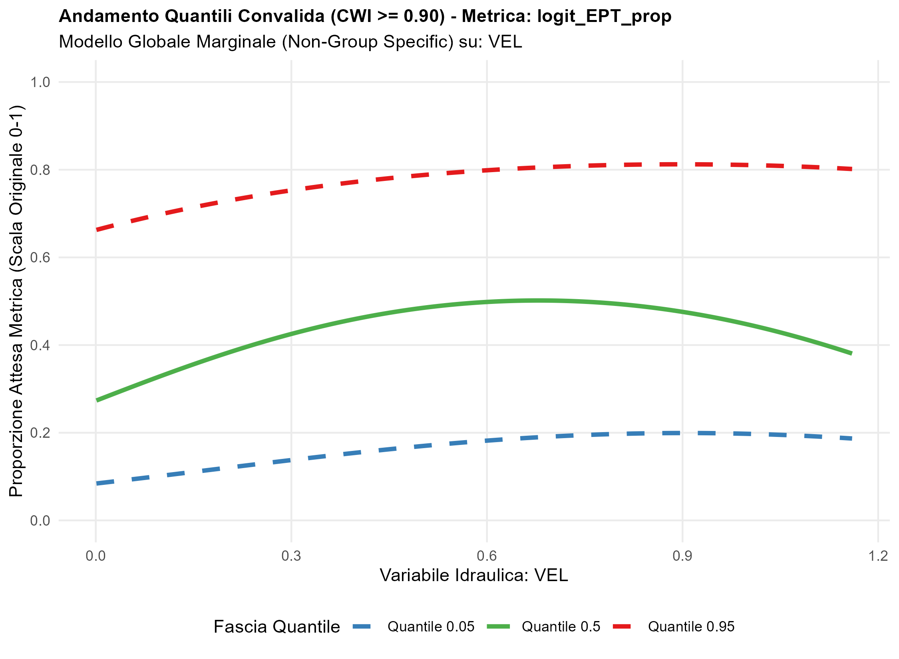
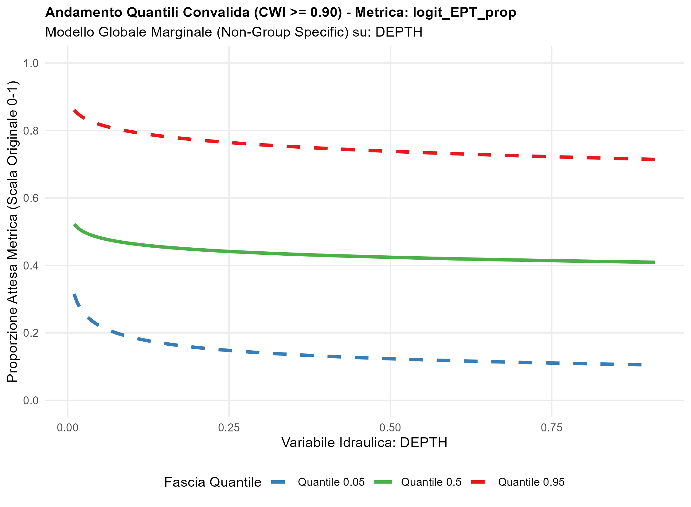
| Variabili Selezionate | DEPTH |
|---|---|
| Interazioni Attive | |
| Modello Intercetta | full |
| Formula di Riferimento | VAR ~ 1 + DEPTH + GROUP + SUB |
| Incertezza Totale CV (σ) | 0.0655 |
| Approvazione Modello Globale | NO (CWI Globale: 0.5977) |
| Ammissibilit` Floor (0.05) | NO (CWI Quantile: 0.1665) |
| Ammissibilit` Mediana (0.50) | NO (CWI Quantile: 0.9286) |
| Ammissibilit` Ceiling (0.95) | NO (CWI Quantile: 0.4131) |
Grafici non generati: il modello globale o i singoli quantili non hanno raggiunto la stabilit` critica di CWI ≥ 0.90.
| Variabili Selezionate | |
|---|---|
| Interazioni Attive | |
| Modello Intercetta | no_sub |
| Formula di Riferimento | VAR ~ 1 + GROUP |
| Incertezza Totale CV (σ) | 0.0363 |
| Approvazione Modello Globale | NO (CWI Globale: 0.4818) |
| Ammissibilit` Floor (0.05) | NO (CWI Quantile: 0.4818) |
| Ammissibilit` Mediana (0.50) | NO (CWI Quantile: 0.4818) |
| Ammissibilit` Ceiling (0.95) | NO (CWI Quantile: 0.4818) |
Grafici non generati: il modello globale o i singoli quantili non hanno raggiunto la stabilit` critica di CWI ≥ 0.90.
Le seguenti metriche presentano valori diversi da zero in una percentuale di campioni inferiore al limite richiesto del 10% e non sono state modellate per evitare bias strutturali:
Acroloxidae | Percentuale campioni presenti: 0.21% (Soglia minima richiesta: 10%)
Aeshnidae | Percentuale campioni presenti: 1.47% (Soglia minima richiesta: 10%)
Ameletidae | Percentuale campioni presenti: 0.07% (Soglia minima richiesta: 10%)
Ancylidae | Percentuale campioni presenti: 7.76% (Soglia minima richiesta: 10%)
Anthomyiidae | Percentuale campioni presenti: 0.84% (Soglia minima richiesta: 10%)
Apataniidae | Percentuale campioni presenti: 0.63% (Soglia minima richiesta: 10%)
Aphelocheiridae | Percentuale campioni presenti: 1.26% (Soglia minima richiesta: 10%)
Astacidae | Percentuale campioni presenti: 0.28% (Soglia minima richiesta: 10%)
Beraeidae | Percentuale campioni presenti: 3.64% (Soglia minima richiesta: 10%)
Bithyniidae | Percentuale campioni presenti: 8.11% (Soglia minima richiesta: 10%)
Blephariceridae | Percentuale campioni presenti: 3.71% (Soglia minima richiesta: 10%)
Brachycentridae | Percentuale campioni presenti: 2.52% (Soglia minima richiesta: 10%)
Calamoceratidae | Percentuale campioni presenti: 0.42% (Soglia minima richiesta: 10%)
Calopterygidae | Percentuale campioni presenti: 8.88% (Soglia minima richiesta: 10%)
Cambaridae | Percentuale campioni presenti: 0.14% (Soglia minima richiesta: 10%)
Chloroperlidae | Percentuale campioni presenti: 2.1% (Soglia minima richiesta: 10%)
Coenagrionidae | Percentuale campioni presenti: 1.89% (Soglia minima richiesta: 10%)
Corbiculidae | Percentuale campioni presenti: 6.08% (Soglia minima richiesta: 10%)
Cordulegastridae | Percentuale campioni presenti: 3.71% (Soglia minima richiesta: 10%)
Corixidae | Percentuale campioni presenti: 0.7% (Soglia minima richiesta: 10%)
Crambidae | Percentuale campioni presenti: 1.89% (Soglia minima richiesta: 10%)
Culicidae | Percentuale campioni presenti: 1.12% (Soglia minima richiesta: 10%)
Curculionidae | Percentuale campioni presenti: 0.07% (Soglia minima richiesta: 10%)
Dendrocoelidae | Percentuale campioni presenti: 0.28% (Soglia minima richiesta: 10%)
Dixidae | Percentuale campioni presenti: 1.54% (Soglia minima richiesta: 10%)
Dolichopodidae | Percentuale campioni presenti: 0.77% (Soglia minima richiesta: 10%)
Dreissenidae | Percentuale campioni presenti: 9.44% (Soglia minima richiesta: 10%)
Dryopidae | Percentuale campioni presenti: 2.17% (Soglia minima richiesta: 10%)
Dytiscidae | Percentuale campioni presenti: 7.55% (Soglia minima richiesta: 10%)
Ecnomidae | Percentuale campioni presenti: 0.77% (Soglia minima richiesta: 10%)
Enchytraeidae | Percentuale campioni presenti: 3.08% (Soglia minima richiesta: 10%)
Ephemeridae | Percentuale campioni presenti: 5.66% (Soglia minima richiesta: 10%)
Ephydridae | Percentuale campioni presenti: 0.21% (Soglia minima richiesta: 10%)
Gerridae | Percentuale campioni presenti: 5.38% (Soglia minima richiesta: 10%)
Glossiphoniidae | Percentuale campioni presenti: 3.5% (Soglia minima richiesta: 10%)
Goeridae | Percentuale campioni presenti: 8.39% (Soglia minima richiesta: 10%)
Gomphidae | Percentuale campioni presenti: 9.86% (Soglia minima richiesta: 10%)
Gyrinidae | Percentuale campioni presenti: 1.47% (Soglia minima richiesta: 10%)
Haemopidae | Percentuale campioni presenti: 0.49% (Soglia minima richiesta: 10%)
Haliplidae | Percentuale campioni presenti: 0.91% (Soglia minima richiesta: 10%)
Haplotaxidae | Percentuale campioni presenti: 6.78% (Soglia minima richiesta: 10%)
Helophoridae | Percentuale campioni presenti: 0.28% (Soglia minima richiesta: 10%)
Hirudinidae | Percentuale campioni presenti: 0.21% (Soglia minima richiesta: 10%)
Hydrachnidae | Percentuale campioni presenti: 7.27% (Soglia minima richiesta: 10%)
Hydridae | Percentuale campioni presenti: 8.81% (Soglia minima richiesta: 10%)
Hydrobiidae | Percentuale campioni presenti: 5.87% (Soglia minima richiesta: 10%)
Hydrochidae | Percentuale campioni presenti: 0.49% (Soglia minima richiesta: 10%)
Hydrometridae | Percentuale campioni presenti: 0.28% (Soglia minima richiesta: 10%)
Hydrophilidae | Percentuale campioni presenti: 1.96% (Soglia minima richiesta: 10%)
Ichneumonidae | Percentuale campioni presenti: 0.42% (Soglia minima richiesta: 10%)
Lepidostomatidae | Percentuale campioni presenti: 2.52% (Soglia minima richiesta: 10%)
Lestidae | Percentuale campioni presenti: 2.17% (Soglia minima richiesta: 10%)
Libellulidae | Percentuale campioni presenti: 1.75% (Soglia minima richiesta: 10%)
Melanopsidae | Percentuale campioni presenti: 0.14% (Soglia minima richiesta: 10%)
Mesoveliidae | Percentuale campioni presenti: 0.07% (Soglia minima richiesta: 10%)
Muscidae | Percentuale campioni presenti: 1.26% (Soglia minima richiesta: 10%)
Nepidae | Percentuale campioni presenti: 0.07% (Soglia minima richiesta: 10%)
Neritidae | Percentuale campioni presenti: 0.49% (Soglia minima richiesta: 10%)
Odontoceridae | Percentuale campioni presenti: 3.15% (Soglia minima richiesta: 10%)
Oligoneuriidae | Percentuale campioni presenti: 0.7% (Soglia minima richiesta: 10%)
Pediciidae | Percentuale campioni presenti: 0.07% (Soglia minima richiesta: 10%)
Perlidae | Percentuale campioni presenti: 5.59% (Soglia minima richiesta: 10%)
Perlodidae | Percentuale campioni presenti: 8.32% (Soglia minima richiesta: 10%)
Philopotamidae | Percentuale campioni presenti: 5.24% (Soglia minima richiesta: 10%)
Phryganeidae | Percentuale campioni presenti: 0.07% (Soglia minima richiesta: 10%)
Piscicolidae | Percentuale campioni presenti: 0.14% (Soglia minima richiesta: 10%)
Planariidae | Percentuale campioni presenti: 6.57% (Soglia minima richiesta: 10%)
Planorbidae | Percentuale campioni presenti: 6.78% (Soglia minima richiesta: 10%)
Platycnemididae | Percentuale campioni presenti: 2.24% (Soglia minima richiesta: 10%)
Potamanthidae | Percentuale campioni presenti: 1.82% (Soglia minima richiesta: 10%)
Prosopistomatidae | Percentuale campioni presenti: 0.14% (Soglia minima richiesta: 10%)
Psephenidae | Percentuale campioni presenti: 0.14% (Soglia minima richiesta: 10%)
Ptilocolepidae | Percentuale campioni presenti: 0.07% (Soglia minima richiesta: 10%)
Pyralidae | Percentuale campioni presenti: 0.07% (Soglia minima richiesta: 10%)
Rhagionidae | Percentuale campioni presenti: 0.21% (Soglia minima richiesta: 10%)
Sciomyzidae | Percentuale campioni presenti: 0.14% (Soglia minima richiesta: 10%)
Scirtidae | Percentuale campioni presenti: 8.04% (Soglia minima richiesta: 10%)
Sialidae | Percentuale campioni presenti: 0.98% (Soglia minima richiesta: 10%)
Siphlonuridae | Percentuale campioni presenti: 1.12% (Soglia minima richiesta: 10%)
Stratiomyidae | Percentuale campioni presenti: 7.2% (Soglia minima richiesta: 10%)
Taeniopterygidae | Percentuale campioni presenti: 1.61% (Soglia minima richiesta: 10%)
Thaumaleidae | Percentuale campioni presenti: 0.21% (Soglia minima richiesta: 10%)
Tipulidae | Percentuale campioni presenti: 6.15% (Soglia minima richiesta: 10%)
Valvatidae | Percentuale campioni presenti: 5.31% (Soglia minima richiesta: 10%)
Veliidae | Percentuale campioni presenti: 0.14% (Soglia minima richiesta: 10%)
Viviparidae | Percentuale campioni presenti: 0.42% (Soglia minima richiesta: 10%)